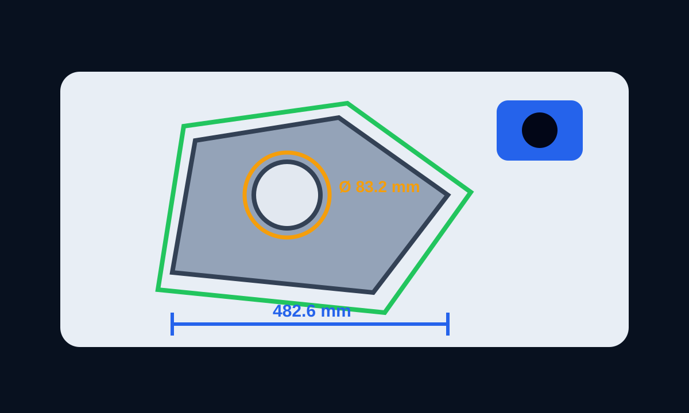

Kontrola geometrii
Pomiar bez odkładania detalu na stanowisko kontrolne.
Jeżeli wymiar lub położenie cechy można wiarygodnie zobaczyć w obrazie, system może wykonać pomiar automatycznie i przekazać wynik do PLC.
wymiary i odległościśrednice i położenie otworówkontur i porównanie do wzorcasygnał OK / NOK do maszyny